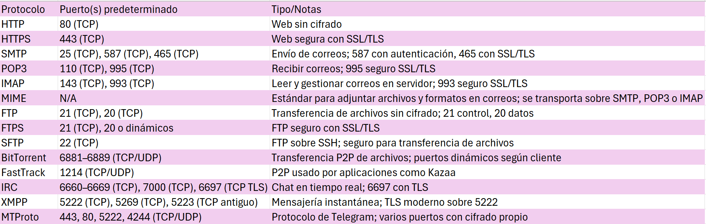

TCP (Transmission Control Protocol) es un protocolo de comunicación en redes que asegura que los datos enviados de un dispositivo a otro lleguen completos y en el orden correcto.
En resumidas palabras: TCP es como enviar cartas certificadas: todo debe llegar completo y en orden, aunque tarde un poco más que UDP.
UDP (User Datagram Protocol) es un protocolo de comunicación en redes que permite enviar datos de un dispositivo a otro de manera rápida, pero sin garantizar que lleguen completos o en orden.
En resumidas palabras: UDP es como enviar mensajes rápidos sin preocuparte si algunos se pierden, útil cuando la velocidad es más importante que la perfección.
Protocolos de Red con sus respectivos puertos y su función
